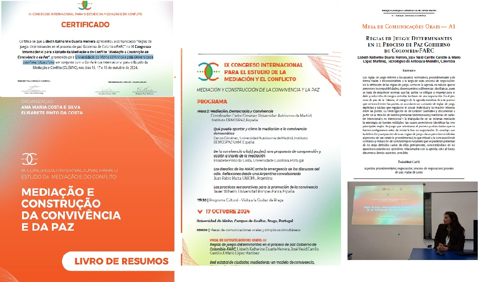
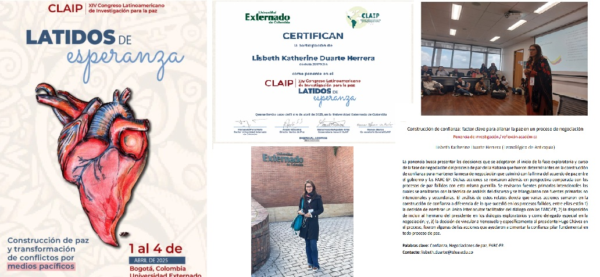

Introducción
Pregunta Problema
¿Cuáles son los factores que contribuyeron y dificultaron el curso del proceso de negociación de paz entre el Estado colombiano y las FARC-EP durante el periodo 2012-2016, así como la firma del Acuerdo final de paz de La Habana?
Objetivo General
Analizar los factores que contribuyeron y dificultaron el proceso a la luz de las teorías de resolución de conflictos para identificar lecciones aprendidas.
Objetivos Específicos
- Relatar el "periodo de la violencia" (1964-2016).
- Describir procesos fallidos y factores de madurez en 2012.
- Identificar ventanas de oportunidad, actores y reglas de juego.
- Revisar la incidencia de los seis puntos del Acuerdo Final.
Supuestos de la Investigación
La Investigación para la paz
Evolución de la Disciplina
Paz negativa: Ausencia de guerra.
Paz positiva: Justicia social y fin de violencia estructural.
Paz imperfecta: Proceso inacabado y dinámico.
Teorías de Resolución
Triángulo del Conflicto (ABC) de Johan Galtung:
- Actitudes
- Comportamientos
- Contradicciones
Secuencia del Proceso
- 1. Pre-negociación (Exploratoria)
- 2. Negociación
- 3. Firma e implementación
Diseño Metodológico
Estrategia de Investigación
Cualitativa, de tipo histórico-interpretativo y basada en el estudio de caso profundo.
Técnicas Empleadas
- Revisión documentalExamen sistemático de archivos oficiales del proceso de paz.
- Análisis del discursoInterpretación semántica y pragmática de narrativas clave.
- Minería de datosMétodo "Distancia de Levenshtein" para comparar técnicamente versiones de acuerdos.
- Crítica de fuentesTriangulación de información para validez histórica.
Fuentes Principales
Memorias de Juan Manuel Santos, Humberto de la Calle y Enrique Santos. Actas y comunicados oficiales.
Procesos de paz fallidos con las FARC-EP
La Uribe (1982)
MinimalistaBajo Belisario Betancur. Careció de veeduría internacional y protocolos claros de cese al fuego.
Caracas-Tlaxcala (1991-1992)
MaximalistaBajo César Gaviria. Agenda abierta y fracaso por persistencia de hostilidades y falta de confianza.
El Caguán (1999)
InabarcableBajo Andrés Pastrana. Zona de distensión sin reglas de verificación y agenda inabarcable.
Resultados
5.1 Fase exploratoria (2010-2012)
Activación de ventanas de oportunidad. Uso de canal discreto (backchannel) y agenda de seis puntos en La Habana.
5.2 Fase de negociación (2012-2016)
Innovación en participación de víctimas. Apoyo de garantes (Cuba/Noruega) y acompañantes internacionales.
5.3 Fase de firma e implementación
Firma en Cartagena, derrota en plebiscito y Acuerdo del Teatro Colón: símbolo de la "paz imperfecta".
Conclusiones
Validación de Supuestos
Se confirman los pilares del éxito: Agenda acotada (S1), Sede neutral (S2), Participación plural (S3) y Acompañamiento internacional (S4).
La Paz Imperfecta
El acuerdo es su máxima expresión: proceso dinámico donde la voluntad política fue el factor determinante.
Difusión científica
Productos derivados de la investigación doctoral y actividades de divulgación académica:

A paso de Tesis

Escuela Internacional Verano 2018

FIL Guadalajara Participación

CALAS 2

Estancia en la Rábida

Capítulo en Teseo

Libro Teseo (Cap. 301)

Congreso de Paz Granada

Negociar y Acordar la Paz

Conferencia en Portugal

Artículo Revista Historelo

Claip

Artículo más consultado del mes
La difusión científica garantiza que los hallazgos de esta tesis contribuyan al fortalecimiento de los estudios de paz a nivel global.